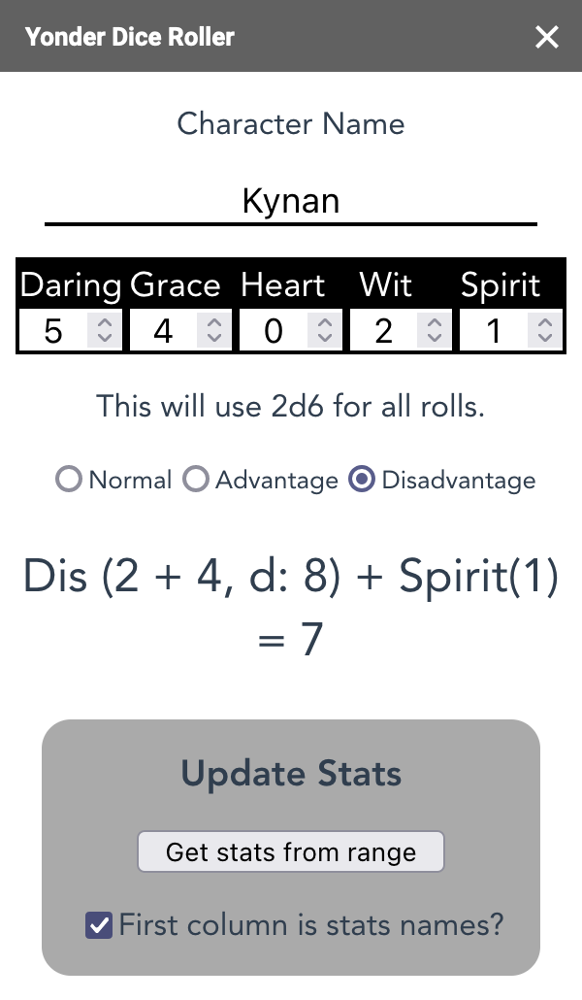
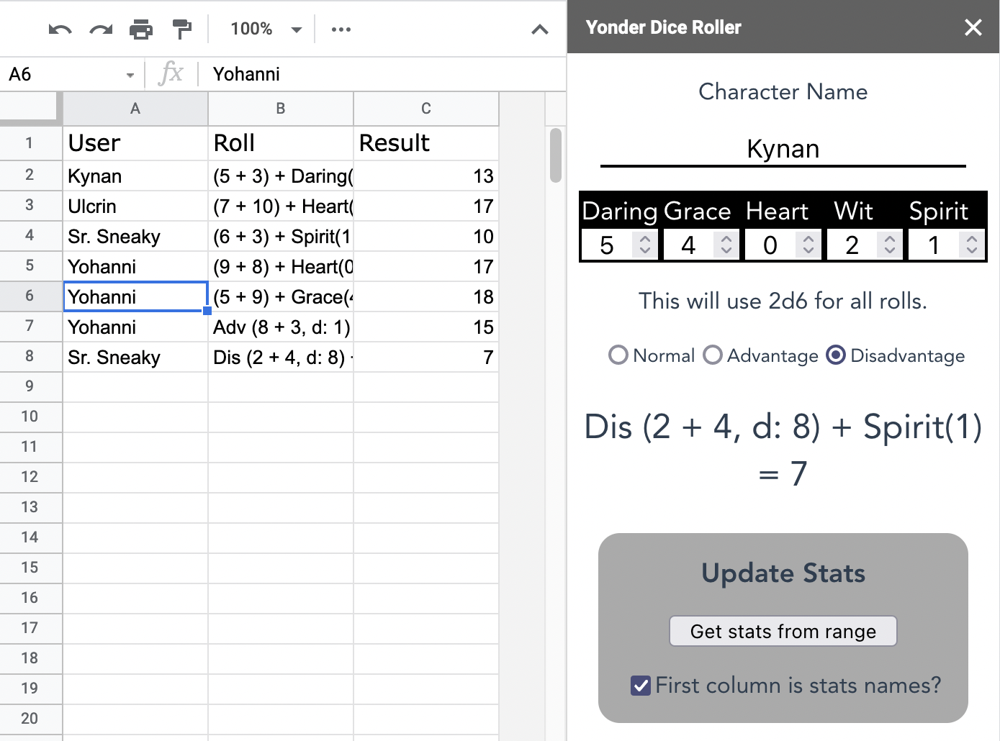

Yonder Dice Roller for Sheets is a free add-on for Google Sheets™ to enhance your online tabletop roleplaying game experience.
Roll and share your results quickly without pausing your game.
It works great with many of the online character keepers; as long as you have a line of stat names and numbers they can be imported into Yonder Dice Roller for Sheets.
Find it in the Google Workspace Marketplace™ here.
›› Get It Now ‹‹

Roll for different stats!
Use it with your favorite character keeper

Share your results with all the players
However, at the moment, Yonder Dice Roller for Sheets works mainly with PbtA-style games that use six-sided dice, all of your rolls at the moment will be 2d6 + stat.
Support for FitD games is planned, with other rolls or game systems support depending on use and demand.
Get Yonder Dice Roller for Sheets for Free.
Dice image by by Joe Maldonado on Unsplash